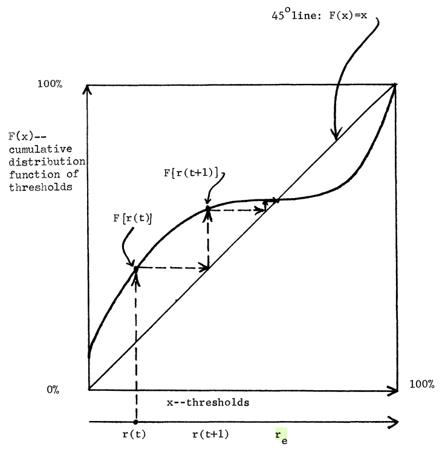
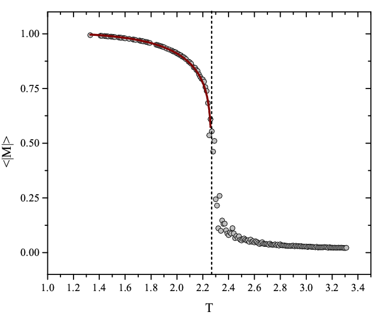
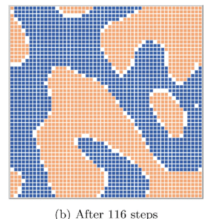
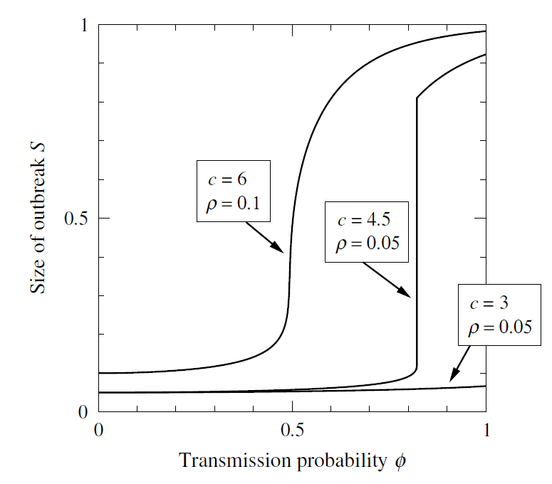
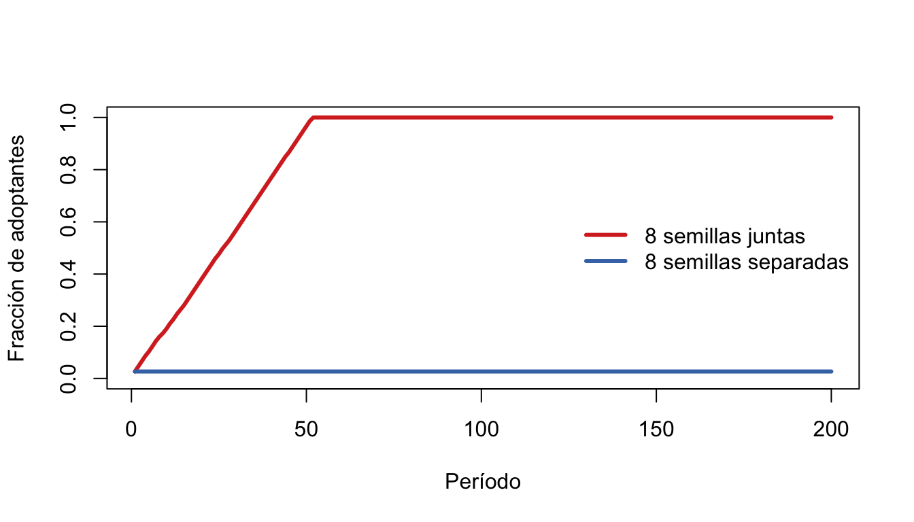
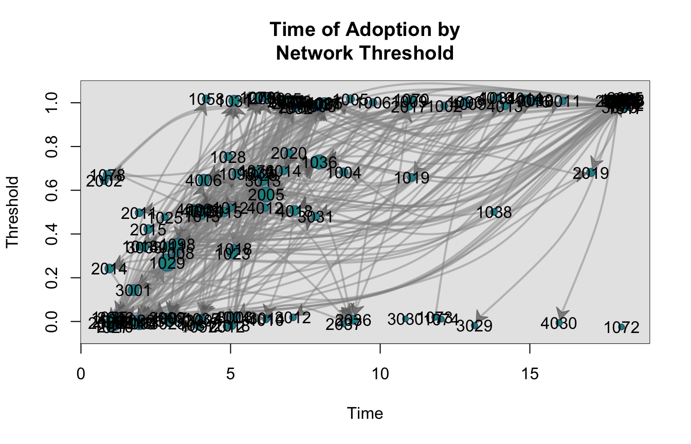

En la primera mitad de la clase vimos el contagio simple: una exposición basta, y los modelos SIR describen cómo se propaga. Este bloque parte de la pregunta que ese modelo no puede responder: ¿y si una exposición no basta? Cuando adoptar cuesta —porque hay que coordinarse, porque no es creíble, porque puede ser mal visto, o porque se necesita el ánimo de otros— se necesitan varias fuentes que refuercen. Eso es un contagio complejo, y cambia todo lo que creíamos saber sobre qué estructuras difunden bien.
La frase-guía del bloque: para un contagio simple, que la semilla vea lejos; para uno complejo, que la semilla vea acompañada.
Sección
Contenido
1. Umbrales
Granovetter (1978) → Valente (1996); y el umbral superior
2. Contagio complejo
Centola & Macy (2007): puentes anchos vs. lazos largos
3. Interludio 1 — Mecanismos
Influencias contrarias; fuentes vs. exposiciones; similitud vs. diversidad
4. Interludio 2 — Transiciones de fase
De segundo y de primer orden
5. Centralidad compleja
Guilbeault & Centola (2021), con su evidencia mixta
6. Cómo ver contagio complejo
Firmas empíricas; la asimetría desinformación/corrección
7. netdiffuseR
Simular, detectar, construir
6 Umbrales para la acción colectiva
6.1 Granovetter (1978): decidir bajo interdependencia
El punto de partida de todo modelo de contagio social es una idea simple de Granovetter: muchas decisiones son binarias (actuar o no actuar) y su utilidad depende de cuántos otros ya actuaron. Unirse a una huelga, a una protesta, adoptar una tecnología, dejar una sala vacía en una fiesta: en todos estos casos, lo que me conviene cambia con lo que hacen los demás.
Cada individuo \(i\) tiene un umbral\(\tau_i\): la fracción mínima de adoptantes que necesita observar para actuar. La regla de decisión es
\[
a_i = 1 \iff r \geq \tau_i,
\]
donde \(r\) es la proporción de la población que ya actuó. Lo notable es que la distribución de umbrales captura toda la dinámica. Si \(F(x)\) es la función de distribución acumulada de los umbrales, la fracción de adoptantes evoluciona como
\[
r(t+1) = F\big(r(t)\big),
\]
y el equilibrio es un punto fijo, \(r_e = F(r_e)\): el proceso se detiene donde la curva \(F\) cruza la diagonal.

El equilibrio de Granovetter: la fracción de adoptantes \(r(t)\) se actualiza aplicando la distribución acumulada de umbrales \(F\), y se detiene donde \(F\) cruza la línea de 45°. Figura original de Granovetter (1978).
6.1.1 Agregación ≠ preferencias individuales
El ejemplo canónico. Hay 100 trabajadores con umbrales \(0, 1, 2, \ldots, 99\): uno actúa sin necesitar a nadie, otro necesita ver a uno, otro a dos, y así. Iteramos: el de umbral 0 actúa; eso activa al de umbral 1; eso activa al de umbral 2… los 100 terminan actuando.
Ahora quitamos al trabajador de umbral 1 y lo reemplazamos por otro de umbral 2. El de umbral 0 actúa. Nadie tiene umbral 1. Los dos de umbral 2 necesitan ver a dos, y solo hay uno. Se detiene en 1.
Dos poblaciones con preferencias casi idénticas —difieren en una sola persona— producen resultados colectivos opuestos: 100 contra 1. Esta es la lección fundacional del bloque, y la razón de que ni encuestas ni promedios permitan predecir la acción colectiva: el resultado no está en las preferencias, está en su distribución.
NotaDos precisiones de Granovetter que se olvidan
El umbral no es una preferencia. Es el punto donde la utilidad neta de actuar se vuelve positiva. Un utilitarista puro y alguien sensible al estatus pueden tener el mismo umbral por razones distintas: es “una medida conductual contingente, no una medida pura de preferencias normativas”. (De hecho, el umbral se puede derivar formalmente de un juego de coordinación: Morris 2000; Easley & Kleinberg 2010, cap. 19.)
El modelo asume mezcla completa: todos observan a todos por igual. No captura que importa quiénes actúan, no solo cuántos — y en la vida real uno no observa a la población, observa a sus vecinos.
6.2 Valente (1996): el umbral se vuelve de red
La segunda precisión es la que Valente resuelve: en vez de la proporción global \(r\), cada persona mira su propia red. La exposición de \(i\) es la fracción de sus contactos que ya adoptaron,
y adopta cuando \(E_i \geq \tau_i\). Es la misma idea de Granovetter, pero ahora la estructura de la red decide quién ve a quién — y con eso, el resultado colectivo pasa a depender de la topología. Todo lo que sigue en el bloque es una exploración de esa dependencia.
6.3 El umbral superior: cuando demasiados también es un problema
Si el umbral es el punto donde la utilidad neta se vuelve positiva, nada impide que demasiada adopción la vuelva negativa de nuevo. Hay al menos tres mecanismos:
Saturación o congestión: el valor cae con la multitud (el bar de El Farol de Arthur; una app que se vuelve lenta).
Pérdida de distinción: lo que valía por exclusivo deja de valer cuando lo tiene todo el mundo — el snob effect de Leibenstein (1950); el reverse bandwagon de Granovetter & Soong (1986).
Señalización de identidad: abandonar un rasgo cuando lo adoptan los “otros” (Berger & Heath 2007).
Alipour et al. (2024) formalizan esto como un bi-umbral: se adopta entre un umbral inferior y uno superior, y sobre el superior se desadopta. Con tres casos de Twitter muestran que este modelo predice el declive de las modas órdenes de magnitud mejor que el umbral lineal.
Umbral lineal (verde) vs. bi-umbral (azul): en el segundo, el beneficio neto de adoptar vuelve a ser negativo cuando demasiados lo hacen. Figura de Alipour et al. (2024).
Guarda esta idea: reaparece al final, porque netdiffuseR puede simular desadopción, y porque conecta con la pregunta de cuándo una cascada se revierte.
7 Contagio complejo y la debilidad de los lazos largos
7.1 Qué es un contagio complejo
Centola & Macy (2007) llaman contagio complejo a uno donde la transmisión no se logra con un solo contacto: se necesitan varios contactos que refuercen. Ejemplos: la credibilidad de una leyenda urbana, la adopción de una nueva tecnología, la disposición a participar en una manifestación riesgosa, la adopción de una moda de vanguardia.
¿Por qué una exposición no basta? Cuatro mecanismos, cada uno con su microfundamento:
Mecanismo
La idea
Microfundamento (para seguir la pista)
Complementariedad estratégica
La innovación es costosa para los primeros y barata para los siguientes; se necesita masa crítica para que valga la pena.
Juegos de coordinación (Schelling 1978; Morris 2000); externalidades de red (Katz & Shapiro 1985).
Credibilidad
Una innovación no es creíble hasta que varios vecinos la adoptan (los médicos y la tetraciclina).
Cascadas informacionales (Bikhchandani, Hirshleifer & Welch 1992; Banerjee 1992): más adoptantes = más evidencia.
Legitimidad
Saber de un movimiento riesgoso no basta para unirse; ver a varios cercanos asistir, sí.
Normas sociales y sesgo de statu quo (Bicchieri 2006; Samuelson & Zeckhauser 1988).
Contagio emocional
Los impulsos expresivos se amplifican en reuniones concentradas social y espacialmente.
Efervescencia colectiva y cadenas de rituales de interacción (Collins 2004); contagio emocional (Hatfield et al. 1993).
7.2 La fortaleza de los lazos débiles… y su límite
Granovetter (1973) mostró que los lazos débiles —conocidos, no íntimos— tienden a conectar actores distantes, y por eso aceleran dramáticamente la difusión: de una enfermedad, de información laboral, de una tecnología. Su frase es célebre: “lo que sea que se deba difundir puede llegar a un mayor número de personas y atravesar una mayor distancia social cuando se transmite a través de lazos débiles en lugar de fuertes.”
Centola y Macy están en contra de esa frase. No del hallazgo, sino de su generalización a “lo que sea que se deba difundir”. La clave está en distinguir dos sentidos de “fortaleza”:
Relacional: un lazo fuerte conecta amigos cercanos con interacción frecuente.
Estructural: un lazo es fuerte si facilita propagar algo a nodos distantes.
El descubrimiento de Granovetter es que los lazos débiles en sentido relacional son fuertes en sentido estructural: son atajos a través de la topología. Y los lazos fuertes relacionales son estructuralmente débiles porque son redundantes (transitividad: mis amigos ya se conocen).
Pero eso vale para contagio simple. Para uno complejo, un lazo largo puede ser débil en ambos sentidos: para el contagio simple lo que importa es el largo del puente; para el complejo, su ancho — cuántos lazos conectan a dos vecindarios. Y recablear lazos largos casi nunca crea puentes anchos.
7.3 El modelo: un anillo con recableado
Definamos \(a\) el número mínimo de vecinos adoptantes necesarios para contagiarse, \(z\) el número de vecinos, y \(\tau = a/z\) el umbral. Como Watts y Strogatz, suponemos umbral e influencia iguales para todos, y grados casi iguales. Los nodos empiezan en un anillo donde cada uno se conecta con sus \(z\) vecinos más próximos, y luego recableamos una fracción \(p\) de lazos al azar.
El contagio avanza por el anillo: los nodos \(j\) y \(k\), ya activados (negros), contagian juntos al nodo \(l\).
Recableamos \(ih \to iq\). En contagio simple, el atajo reduciría el tiempo de propagación. En contagio complejo, impide por completo la propagación: \(i\) ya no recibe refuerzo suficiente.
Este recableado sí forma un puente ancho entre los vecindarios \(J\) y \(S\). El efecto neto del recableado depende de si es más probable formar puentes que romperlos.
Con más de un puente en juego el problema deja de ser tratable a mano, así que se simula: \(z = 8\), umbrales \(\tau = 1/8, 2/8, 3/8\), y se mide la tasa de propagación (iteraciones hasta que el contagio alcanza el 99% de la red) en función de \(p\), desde la red regular (\(p=0\)) hasta la aleatoria (\(p=1\)), pasando por el mundo pequeño.
Tiempo hasta saturar la red según la fracción \(p\) de lazos recableados, para tres umbrales. Con \(\tau = 1/8\) (contagio simple), más atajos = más rápido, siempre. Con \(\tau = 2/8\) y \(3/8\), el recableado primero no ayuda, luego ayuda un poco, y finalmente impide la propagación. Figura de Centola & Macy (2007).
ImportanteResultados principales de Centola & Macy (2007)
El contagio complejo no se beneficia de niveles bajos de aleatorización. Con \(\tau = 2/8\), la curva es plana hasta \(p \approx 10^{-3}\).
El efecto de \(p\) sobre el tiempo de saturación no es monótono para contagios complejos: baja, toca un mínimo y sube hasta que la propagación falla. Es un ejemplo de transición de fase de primer orden en la propagación (Interludio 2).
La difusión de información no es equivalente a la difusión de comportamientos. La frase de Granovetter es correcta para la primera y falsa para la segunda.
Recuerda la figura de Watts–Strogatz del capítulo de mecanismos de formación: la misma perilla \(p\) que allí hacía “pequeño” al mundo es la que aquí decide si un comportamiento se propaga. En la sección de netdiffuseR reproduciremos este resultado con diez líneas de código.
8 Interludio 1 — Mecanismos: por qué varias fuentes
Antes de seguir con la estructura, conviene detenerse en el por qué. Tres ideas que la literatura reciente ha decantado, y que explican buena parte de lo que viene.
8.1 Las influencias contrarias
En un contagio simple, los no-adoptantes son irrelevantes: si tengo contacto con alguien con sarampión, me contagio, sin importar cuántos sanos conozca. En un contagio complejo, los no-adoptantes son una señal activa: cada contacto que no adoptó dice, en silencio, “esto no es aceptado”. Centola las llama influencias contrarias (countervailing influences). State & Adamic (2015) lo midieron en el cambio masivo de fotos de perfil en Facebook en apoyo al matrimonio igualitario: lo que predecía adoptar no era cuántos amigos ya lo habían hecho, sino qué fracción — el número de amigos que no lo habían hecho pesaba en contra.
La consecuencia es la primera sorpresa del bloque: cuanto más conectado estás, más influencias contrarias enfrentas. Un actor con cientos de contactos ve, ante cualquier innovación nueva, a cientos que todavía no la adoptan. Por eso los “influyentes” suelen ser frenos y no aceleradores de los contagios complejos, y por eso tantos movimientos —la Primavera Árabe en Egipto (Steinert-Threlkeld 2017), la adopción de Twitter (Toole et al. 2012), el Ice Bucket Challenge (Sprague & House 2017)— nacieron en la periferia, donde con pocos contactos basta poco refuerzo, y desde ahí crecieron hasta arrastrar al centro.
8.2 Fuentes, no exposiciones
La segunda idea corrige una lectura ingenua del umbral: lo que cuenta no es cuántas veces recibo la señal, sino de cuántas fuentes distintas e independientes la recibo. La psicología social lo estableció hace décadas:
Asch (1955): con un cómplice que da la respuesta incorrecta, el 3% se conforma; con dos, el 13%; con tres, el 33%. Y después, meseta: más cómplices no agregan casi nada. Es un umbral con saturación, medido en laboratorio (Bond 2005 lo confirma en un meta-análisis de 125 estudios).
Latané (1981): la ley psicosocial del impacto social, \(I = s\,N^{t}\) con \(t < 1\) — cada fuente adicional agrega impacto, pero cada vez menos. Es la misma forma funcional de los retornos decrecientes del término gwesp que vimos en ERGM.
Harkins & Petty (1981, 1987), el efecto de fuentes múltiples: los mismos argumentos, presentados por varias personas, persuaden más que repetidos por una — porque provocan más escrutinio. Pero el efecto desaparece si se dice que las fuentes son miembros de un mismo comité que acordó una posición: solo cuentan las fuentes independientes. Y Wilder (1977) mostró lo mismo para la conformidad: dos personas de grupos distintos pesan más que dos del mismo grupo.
Morgan et al. (2012): el uso de información social crece con el número de demostradores y con su consenso.
La neurociencia muestra por qué esto pesa tanto: la señal social no se procesa como información neutra, sino como valor — cambiar de opinión ante el grupo se ve en el cerebro como un error de predicción del aprendizaje por refuerzo (Klucharev et al. 2009), y la opinión de los pares altera la codificación del valor de las cosas (Zaki et al. 2011; Zhang & Gläscher 2020).
Traducido a redes: no cuentes amigos adoptantes, cuenta grupos distintos de amigos adoptantes. Ugander et al. (2012) lo demostraron con el registro a Facebook: lo que predice unirse no es el número de contactos invitando, sino el número de componentes conectados distintos entre ellos — la diversidad estructural.
8.3 Similitud o diversidad: depende de la barrera
La tercera idea afina la anterior. Si las fuentes independientes son lo que convence, ¿deben parecerse a mí o ser distintas entre sí? Centola (2022) responde que depende de cuál barrera opera: cuando la barrera es credibilidad o emoción, convencen los pares similares — la prueba social de mi propio grupo (Centola 2011: la homofilia aumenta la adopción de conductas de salud). Cuando la barrera es legitimidad, convencen las fuentes diversas: en el caso del signo igual, la gente cambió su foto cuando vio adoptantes de círculos sociales distintos — abuelos, colegas, amigos del colegio — porque eso probaba que el apoyo era amplio y el riesgo social, bajo. La misma estructura de refuerzo puede necesitar homofilia o heterofilia según qué se está difundiendo.
9 Interludio 2 — Transiciones de fase de primer orden
Centola & Macy dicen que el colapso de la propagación al aumentar \(p\) es “una transición de fase de primer orden”. Vale la pena entender qué significa, porque el concepto reaparece en toda la ciencia de la complejidad social.
9.1 Segundo orden: el cambio es continuo
El modelo de Ising con espines \(s_i = \pm 1\) y sin campo externo (\(B = 0\)): al bajar la temperatura, la magnetización \(m\) pasa de cero a distinta de cero de manera continua — la curva es empinada cerca de \(T_c\) pero no salta.

Ising sin campo externo: la magnetización \(\langle |M| \rangle\) crece continuamente al bajar la temperatura bajo \(T_c\) (línea punteada). Una transición de segundo orden.
El modelo de Schelling de segregación se comporta parecido: la segregación emerge gradualmente al variar la tolerancia.

Modelo de Schelling: la segregación espacial emerge de preferencias individuales moderadas. Otro cambio gradual de un parámetro de orden.
9.2 Primer orden: el cambio es un salto
Ahora Ising con campo externo \(B\), manteniendo \(T < T_c\). Al variar \(B\), la magnetización salta de \(-1\) a \(+1\) de golpe — y no salta en el mismo punto al subir que al bajar: hay histéresis. Cerca del salto coexisten dos estados posibles (los dos signos de \(m\)), y cuál se observa depende de la historia.
Ising con campo externo, \(T < T_c\): la magnetización salta discontinuamente al cambiar el signo del campo \(H\), y el punto de salto depende de la temperatura. Una transición de primer orden.
Tres marcas definen una transición de primer orden, y las tres importan para el contagio: (1) el parámetro de orden salta (no crece suavemente); (2) hay histéresis: revertir exige ir mucho más atrás que el punto donde se produjo el salto; (3) hay coexistencia y metaestabilidad: cerca del punto crítico el sistema puede quedar “atrapado” en un estado que no es el de equilibrio.
9.3 Y en el contagio
Un contagio que requiere refuerzo se comporta como el segundo caso. La figura muestra el tamaño del brote según la probabilidad de transmisión en un modelo con refuerzo: para ciertos parámetros el brote crece de forma suave, pero para otros salta de casi nada a casi toda la población en un punto crítico.

Tamaño del brote \(S\) según la probabilidad de transmisión \(\phi\) en un modelo de contagio con refuerzo, para tres combinaciones de grado medio \(c\) y fracción inicial \(\rho\). La curva del medio salta: transición de primer orden. Figura de Newman, Networks.
Es exactamente lo que Centola & Macy observan al aumentar \(p\): la saturación pasa de “completa” a “ninguna” de golpe, no gradualmente. Y las tres marcas tienen lectura social directa: los tipping points de las normas (Centola et al. 2018 los provocaron experimentalmente con una minoría comprometida del 25%), la irreversibilidad de muchos cambios sociales (una vez que una norma cayó, restaurarla cuesta mucho más que lo que costó derribarla), y la impredecibilidad cerca del punto crítico, donde poblaciones casi idénticas producen resultados opuestos — que es, dicho en otro lenguaje, el ejemplo de los 100 trabajadores con que empezamos.
10 Centralidad compleja: por qué la periferia importa
10.1 El diagnóstico
Todas las centralidades que aprendimos —grado, intermediación, cercanía, autovector— comparten un supuesto escondido: que un solo lazo constituye un paso en la red. Es decir, están construidas sobre el largo de camino simple. Guilbeault & Centola (2021) muestran que ese supuesto las vuelve ciegas para los contagios complejos: para un comportamiento que necesita refuerzo, un lazo aislado no es un camino, y el nodo “central” según grado o intermediación puede estar, para ese contagio, en el peor lugar posible.
10.2 La medida
La construcción es en tres pasos. El ancho de un puente entre dos vecindarios es cuántos lazos reforzantes los conectan. El largo de camino complejo entre \(A\) y \(B\) es cuántos puentes suficientemente anchos hay que atravesar para ir de uno a otro (puede ser mucho mayor que el largo simple: un lazo débil directo puede no contar). Y la centralidad compleja de un nodo es el promedio de sus largos de camino complejo hacia toda la red: a cuánta población alcanza vía cadenas de puentes anchos.
AdvertenciaFigura pendiente
Figura 1 de Guilbeault & Centola (2021): camino simple vs. camino complejo entre A y B. Guardar como figs/contagio/11-guilbeault-centola-camino-complejo.png y reemplazar este recuadro por la imagen.
Un detalle que conviene decir en voz alta. Revisando el código publicado, la centralidad compleja se calcula simulando: para cada nodo, se activa su vecindario y se corre una cascada de umbral determinista; el largo de camino complejo se mide sobre lo que se activó. Es una centralidad definida por un proceso —como PageRank lo está por un paseo aleatorio—, lo que es legítimo, pero implica dos cosas: requiere asumir un umbral\(T\), y su validación en simulación (elegir semillas con la medida y evaluarlas con el mismo modelo de umbral) es casi circular. La prueba no circular es la empírica.
10.3 Qué encuentran
En 74 redes escolares (Add Health), las semillas elegidas por centralidad compleja superan a las elegidas por grado, intermediación, autovector, k-core y percolación, para todo umbral. Y en las 43 aldeas indias del programa de microfinanzas de Banerjee et al. (2013), las aldeas con mayor largo de camino complejo promedio difundieron más, y los hogares con alta centralidad compleja —no los “líderes” que los investigadores habían preseleccionado— predicen mejor que sus vecinos adopten.
Su afirmación textual es cuidadosa: “network locations with low degree centrality and low betweenness centrality may nevertheless be the most influential locations in the population.” El may importa: no es que la periferia gane por ser periferia; gana cuando está embebida en un vecindario denso con puentes anchos.
10.4 La evidencia empírica es mixta
Las simulaciones establecen el patrón; los datos lo matizan.
A favor de “los hubs dispersos fallan”
Matices
Kim et al. (2015, Lancet) — RCT en 32 aldeas: sembrar en los de mayor in-degreeno superó al azar.
Banerjee et al. (2013) — su centralidad de difusión (camino simple) sí predijo la adopción: la información viaja simple aunque adoptar sea complejo.
Beaman et al. (2021, AER) — RCT en 200 aldeas: la adopción requiere ≥ 2 contactos informados; la siembra por teoría de redes supera al extensionista.
Valente & Vega Yon (2020) — con distribuciones de umbral (media 0.33 y varianza), las semillas de alto in-degree son las más rápidas y las marginales las peores.
Centola (2010, Science) — las redes clusterizadas difunden más un comportamiento de salud que las aleatorias.
Iyengar, Van den Bulte & Valente (2011) — los líderes de opinión sí aceleran la adopción de un fármaco.
Ugander et al. (2012); Romero et al. (2011); Mønsted et al. (2017) — diversidad estructural, persistencia y experimentos con bots.
Watts (2002) — en el régimen de baja conectividad los hubs sí disparan cascadas.
Barberá et al. (2015); Steinert-Threlkeld (2017) — la periferia genera el alcance de las protestas.
Airoldi & Christakis (2024) — semillas de mayor grado (nominadas por amigos) funcionan: pero están embebidas en clusters.
ImportanteLo que sí está firme
Lo que fracasa no es “el hub”, sino la siembra dispersa: un nodo aislado cuyos vecinos solo lo ven a él. Lo que funciona es la siembra reforzada —semillas adyacentes que se dan refuerzo mutuo—, esté en la periferia (donde es barata) o en el centro. Para contagio simple, que la semilla vea lejos; para contagio complejo, que la semilla vea acompañada.
11 Cómo ver contagio complejo en la literatura
¿Cómo saber, con datos, si algo se propaga como contagio complejo? Cinco firmas que la literatura ha usado, cada una con su estudio de referencia:
Persistencia. Romero, Meeder & Kleinberg (2011): en Twitter, los hashtags políticos y los controversiales necesitan más exposiciones repetidas para ser adoptados que los idiomáticos o de entretenimiento — la curva de adopción según número de exposiciones tiene distinta forma según el tema.
Experimento con fuentes. Mønsted et al. (2017): con bots en Twitter que controlan cuántas fuentes distintas exponen a cada persona, la probabilidad de adoptar crece con el número de fuentes de manera consistente con contagio complejo, no simple.
Umbral en campo. Beaman et al. (2021): en Malawi, los agricultores adoptan una tecnología cuando al menos dos contactos la conocen; con uno, casi nadie.
Diversidad estructural. Ugander et al. (2012): lo que predice unirse a Facebook es el número de componentes distintos entre quienes te invitan.
Puentes anchos históricos. Saetre (2025, AJS): Un violador en tu camino saltó de Valparaíso a 60 países en semanas. La diáspora chilena formada en los 70 funcionó como puente ancho latente: clusters de personas con lazos simultáneos a Chile y a sus sociedades de acogida, que primero replicaron la performance en solidaridad y luego permitieron que locales no chilenos la adaptaran. La autora mide el ancho del puente con el tamaño de la diáspora por ciudad y sus lazos vigentes con Chile, y muestra la secuencia diáspora → adaptación local → prescindir del intermediario.
AdvertenciaFigura pendiente
Mapa o secuencia temporal de la difusión de Un violador en tu camino (Saetre 2025). Guardar como figs/contagio/12-saetre-un-violador-difusion.png y reemplazar este recuadro.
11.1 La asimetría: lo que confirma es simple, lo que desafía es complejo
Una consecuencia de todo lo anterior, que Centola (2022) desarrolla y que vale un párrafo propio: las redes no son tuberías, son prismas. La información que confirma los sesgos de una comunidad es fácil de entender y de aceptar — se propaga como contagio simple, y los nodos muy conectados la difunden sin fricción. La información que desafía esos sesgos encuentra resistencia — es un contagio complejo, y necesita refuerzo de fuentes que la comunidad considere relevantes. De ahí la asimetría estructural entre desinformación y corrección: la corrección siempre corre con desventaja de mecanismo, no solo de contenido. Las mascarillas en la pandemia son el ejemplo de Centola: la misma conducta fue contagio simple en comunidades que confiaban en la autoridad sanitaria y contagio complejo donde no.
11.2 El backfire: cuando la estrategia del contagio simple mata al complejo
Google+ (2011–2019) es el caso de manual. Google usó su alcance para asociar a cientos de millones de cuentas con Google+ en una campaña masiva de awareness. Logró que todo el mundo supiera que existía — y que todo el mundo supiera que nadie lo usaba. Esa visibilidad convirtió a cada usuario de Facebook en una influencia contraria explícita: prueba social en contra. Centola lo llama la falacia del fregadero (kitchen sink fallacy): aplicar agresivamente estrategias de contagio simple (alcance, difusión masiva) a un contagio complejo (una red social, que requiere coordinación) no es inocuo — puede impedir la adopción.
12 netdiffuseR: simular, detectar, construir
netdiffuseR es el paquete de R para difusión en redes (Valente, Vega Yon y colaboradores). Tiene mucho más de lo que veremos; aquí, tres capacidades que bastan para empezar a investigar.
12.1 Simular: las mismas semillas, juntas o separadas
Reproduzcamos la intuición de Centola & Macy en diez líneas. Un anillo de 300 nodos con 8 vecinos cada uno y 2% de recableado; umbral \(\tau = 2/8\) (contagio complejo: hacen falta dos vecinos adoptantes); y las mismas 8 semillas, en dos versiones: contiguas, o separadas por 40 posiciones (ninguna adyacente a otra).
library(netdiffuseR)set.seed(21)n <-300A <-as.matrix(rgraph_ws(n, 8, p =0.02, undirected =TRUE))A <-1* ((A +t(A)) >0) # simétrica y binariajuntas <-1:8# bloque contiguodispersas <-seq(20, 300, by =40)[1:8] # separadas: ninguna es vecina de otrasimular <-function(semillas) {rdiffnet(seed.graph = A, t =200, seed.nodes = semillas,threshold.dist =0.25, # 2 de 8 vecinosexposure.args =list(normalized =TRUE),rewire =FALSE, stop.no.diff =FALSE)}d_juntas <-simular(juntas)d_dispersas <-simular(dispersas)c(juntas =mean(!is.na(d_juntas$toa)), dispersas =mean(!is.na(d_dispersas$toa)))
juntas dispersas
1.00000000 0.02666667
curva <-function(d) cumulative_adopt_count(d)[1, ] / nplot(curva(d_juntas), type ="l", lwd =3, col ="#d73027", ylim =c(0, 1),xlab ="Período", ylab ="Fracción de adoptantes")lines(curva(d_dispersas), lwd =3, col ="#4575b4")legend("right", c("8 semillas juntas", "8 semillas separadas"),col =c("#d73027", "#4575b4"), lwd =3, bty ="n")

Figura 12.1: Fracción acumulada de adoptantes. Las semillas contiguas recorren toda la red con un frente lineal; las mismas ocho semillas, separadas, no contagian a nadie.
Mismas semillas, misma red, mismo umbral: juntas encienden toda la red; separadas, ninguna prende a nadie. Ese es el puente ancho en acción — y por qué “sembrar en clusters” es la única recomendación firme de toda la literatura de centralidad compleja.
NotaPara jugar
Cambia threshold.dist a 1/8: ahora es contagio simple. ¿Importa que las semillas estén juntas?
Sube el recableado p a 0.1 y 0.3 con \(\tau = 2/8\). ¿Qué pasa con la prevalencia final? Estás recorriendo la curva de Centola & Macy.
rdiffnet tiene un argumento disadopt: con él puedes implementar el bi-umbral (adoptar entre dos umbrales, abandonar sobre el superior). ¿Cómo cambia la curva?
12.2 Detectar: ¿hay firma de contagio complejo en datos reales?
netdiffuseR trae los tres datasets clásicos de difusión de innovaciones: los médicos y la tetraciclina (Coleman, Katz & Menzel 1966), los agricultores brasileños y el maíz híbrido, y las mujeres coreanas y la planificación familiar. Usemos el primero. La pregunta: ¿adoptar depende de cuántos vecinos ya adoptaron, y de forma creciente con el segundo y tercer vecino (firma compleja), o basta con uno (firma simple)?
Dynamic network of class -diffnet-
Name : Medical Innovation
Behavior : Adoption of Tetracycline
# of nodes : 125 (1001, 1002, 1003, 1004, 1005, 1006, 1007, 1008, ...)
# of time periods : 18 (1 - 18)
Type : directed
Num of behaviors : 1
Final prevalence : 1.00
Static attributes : city, detail, meet, coll, attend, proage, length, ... (58)
Dynamic attributes : -
plot_threshold(dn)

Umbral observado de cada médico (fracción de sus contactos que ya habían adoptado cuando él adoptó) según su tiempo de adopción.
Muchos adoptaron con exposición cero (los innovadores) y muchos con exposición completa (los rezagados). Para testear la firma, armamos la tabla nodo-período de quienes aún no han adoptado, y modelamos la adopción según la exposición en conteo del período anterior, primero lineal y luego por escalones:
expo_n <-cbind(NA, exposure(dn, normalized =FALSE)[, -nslices(dn)]) # vecinos adoptantes en t-1dn[["expo_n"]] <- expo_nlargo <-as.data.frame(dn) # una fila por nodo-períodolargo$adopta <-as.integer(!is.na(largo$toa) & largo$toa == largo$per)riesgo <- largo[(is.na(largo$toa) | largo$per <= largo$toa) &!is.na(largo$expo_n), ]m_lineal <-glm(adopta ~ expo_n +factor(per), data = riesgo, family = binomial)m_escalon <-glm(adopta ~I(expo_n >=1) +I(expo_n >=2) +I(expo_n >=3) +factor(per),data = riesgo, family = binomial)round(coef(summary(m_lineal))[2, , drop =FALSE], 3)
Estimate Std. Error z value Pr(>|z|)
expo_n 0.073 0.114 0.644 0.52
El veredicto honesto: no hay firma clara de contagio complejo en estos datos. Ni el efecto lineal es significativo, ni los escalones muestran el salto creciente al segundo o tercer vecino, ni el modelo escalonado mejora el AIC. Es coherente con lo que se sabe de este caso desde Van den Bulte & Lilien (2001): la adopción de la tetraciclina estuvo dominada por el marketing farmacéutico, y el “contagio” original de Coleman se desvanece al controlarlo. Un test de dependencia estructural dice lo mismo — el umbral medio observado no difiere del que darían redes con la misma secuencia de grados:
set.seed(1)struct_test(dn, function(x) mean(threshold(x), na.rm =TRUE), R =200)
Structure dependence test
# Simulations : 200
# nodes : 125
# of time periods : 18
--------------------------------------------------------------------------------
H0: E[beta(Y,G)|G] - E[beta(Y,G)] = 0 (no structure dependency)
observed expected p.val
0.5660 0.5562 0.6600
Que un detector diga no es tan informativo como que diga sí: la mayoría de las difusiones célebres no son contagios complejos, y saber distinguirlas es exactamente la competencia que este bloque quiere dejar instalada.
NotaPara jugar
Repite el análisis con brfarmersDiffNet (agricultores) y kfamilyDiffNet (planificación familiar). ¿En cuál aparece el salto al segundo vecino?
12.3 Construir: de la encuesta al diffnet
Todo lo anterior necesita un objeto diffnet: la red más los tiempos de adopción. Si tus datos vienen de una encuesta con generador de nombres —como la de nuestra primera ayudantía— la función survey_to_diffnet() lo arma directamente. Con la encuesta cruda coreana que trae el paquete:
data(kfamily)kf <-survey_to_diffnet(dat = kfamily,idvar ="id", # identificador de cada egonetvars =c(paste0("net1", 1:5), paste0("net2", 1:5), paste0("net3", 1:5)), # las nominacionestoavar ="toa", # tiempo de adopcióngroupvar ="village"# las redes son por aldea)kf
Dynamic network of class -diffnet-
Name : Diffusion Network
Behavior : Unknown
# of nodes : 1047 (1002, 1003, 1005, 1007, 1010, 1011, 1012, 1014, ...)
# of time periods : 11 (1 - 11)
Type : directed
Num of behaviors : 1
Final prevalence : 1.00
Static attributes : village, recno1, studno1, area1, id1, nmage1, nmag... (430)
Dynamic attributes : -
Tres columnas mínimas: un id, las nominaciones y el tiempo de adopción. Nuestra encuesta_nominaciones.xlsx tiene las dos primeras; agrégale una columna toa (¿cuándo adoptó cada persona la conducta que te interesa?) y ya puedes correr sobre ella todo lo de esta sección: umbrales observados, exposición, el test de firma y las simulaciones.